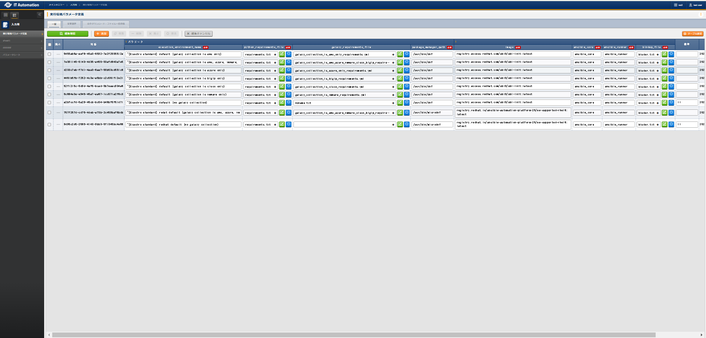
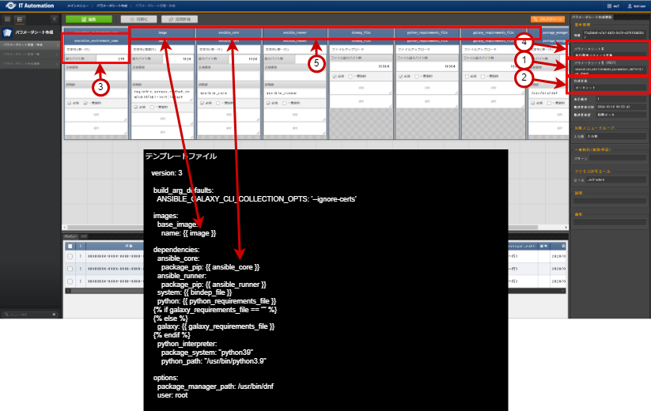

Ansible Execution Agentで実際に使用する例については、「 Ansible実行環境のカスタマイズ 」を参照してください。
ITAをインストールすると、 と にpythonモジュールやansible galaxyコレクションが追加できるテンプレートファイルとパラメータ値が登録されます。
- に登録するテンプレートファイルの仕様は以下のとおりです。
- ファイルの形式は「Jinja2」です。
- ファイルの書式は、ansible-builderで使用する定義ファイル「execution-environment.yml」に準じます。詳細は、 ansible-builder のマニュアルを参照してください。
- ITAインストール時に登録される の項目一覧は以下のとおりです。
 パラメータシート「実行環境パラメータ定義」¶ 項目
説明
入力必須
入力方法
制約事項
execution_environment_name
レコードの名称を入力します。
〇
手動入力
最大長255バイト
python_requirements_file
実行環境（コンテナ）にpipコマンドで追加インストールをしたいPythonパッケージを列挙したファイルを入力します。
〇
ファイル選択
最大サイズ 100Mバイト 尚、空ファイルを入力しないで下さい。ansible-builder実行時にエラーになります。
galaxy_requirements_file
実行環境（コンテナ）にansible-galaxyで追加インストールをしたいコレクションを列挙したファイルを入力します。
－
ファイル選択
最大サイズ 100Mバイト 尚、空ファイルを入力しないで下さい。ansible-builder実行時にエラーになります。
bindep_file
実行環境（コンテナ）にdnfコマンドで追加インストールをしたいLinuxモジュールを列挙したファイルを入力します。
〇
ファイル選択
最大サイズ 100Mバイト 尚、空ファイルを入力しないで下さい。ansible-builder実行時にエラーになります。
ansible_runner
「ansible_runner」を入力します。
〇
手動入力
最大長255バイト
image
実行環境（コンテナ）のベースイメージを入力します。
〇
手動入力
最大長255バイト
package_manager_path
パッケージ管理コマンドのパスを入力します。
〇
手動入力
最大長255バイト
- を新規作成・更新する場合の注意事項を新規作成・更新する場合の注意事項について以下に列挙します。
- パラメータシート名（rest）は、先頭が「execution_environment_parameter_definition_sheet」で始まる名称にしてください。
- 作成対象は、データシートを選択してください。
- パラメータシートの項目に以下の項目を含んでください。
項目
説明
Rest API用項目名
execution_environment_name
入力値
レコード名
項目タイプ
文字列(単一行)
最大バイト数
255
- パラメータシート名を入力します。
Tip
の に表示される情報について補足には下記情報が表示されます。④パラメータシート名／③レコード名「Rest API用項目名：execution_environment_name」 - に登録したテンプレートファイル内の変数と同名の項目を用意してください。パラメータシートの項目名を変数名、設定値を変数値として、テンプレートファイルに埋め込みます。実行環境定義テンプレート管理で使用するテンプレートファイルと実行環境パラメータ定義で使用するパラメータシートの関連図
{kind=link}
{kind=link}